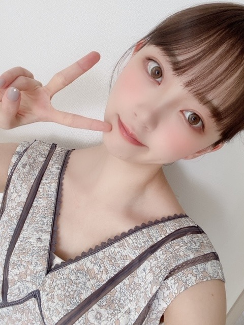
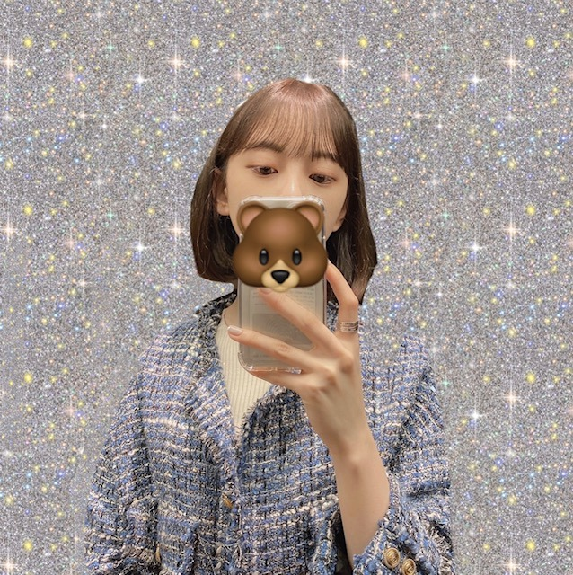

2020/0603Wedぎゅ〜
こんにちは〜
今日も暑いですね...
スイカを買ったので冷やして
食べたいなと思っています♩


あ、2nd写真集と堀工事中
みてくださいましたか？
コメンタリーメンバーは
なんと、プリン会ですo(^∇^)o♩
みり愛と絢音といつも話してる感じで
ゆるく楽しめました♩
写真集の感想も地元や東京の友達、
メンバーからも貰ってすごくうれしいです
もちろんみなさんが細かくみてくださってるのも
知ってますし嬉しいです！
ありがとうございます！
インタビューでも言ってますが、周りの友達の
恋愛観を聞いて参考にさせてもらって決めた
裏テーマ"付き合って一年の彼女と南仏旅行"
を感じていただけたら嬉しいです〜
メイキング付きの楽天ブックス限定版は6/8までです！
お早めに♩

たくさん見てね〜
すっぴんらくらくな日もあれば
ちゃんとメイクをする日もあります

（╹◡╹）
早く歌番組に出たり
ライブや撮影などしたいなー...
昨日も家で姉とダンスしました。笑
インスピレーションで踊りました
シャワー浴びたのにまた汗かいてしまったー！
でも楽しかったー！！
では
2020/06/03 11:20
コメント(299)
今日やっと写真集買えました！！
未央奈！！ブログ更新ありがと！
大好き！わたしも、今日スイカたべるよー！
早く会いたい！
あおいまる
大好き！わたしも、今日スイカたべるよー！
早く会いたい！
あおいまる
未央奈ブログ更新♪ o(≧▽≦)o ♪ありがとｯ
早くライブや歌番組で見たいなぁ！！
早くライブや歌番組で見たいなぁ！！
遅れ馳せながら写真集の感想をば！
端的に言えば、『スレンダーセクシー』ですね！
表情も前回よりも大人っぽくなってたと思います。
未央奈ちゃんの好きな、ヘップバーンのイメージも感じましたね。
そしてカバーを外したら、こんなところにも！という嬉しいサプライズ！
堪能いたしました♪
よりたくさんの人に、見てもらえることを願っています!!☆
端的に言えば、『スレンダーセクシー』ですね！
表情も前回よりも大人っぽくなってたと思います。
未央奈ちゃんの好きな、ヘップバーンのイメージも感じましたね。
そしてカバーを外したら、こんなところにも！という嬉しいサプライズ！
堪能いたしました♪
よりたくさんの人に、見てもらえることを願っています!!☆
ぎゅ〜っとしてくれるんですね。
やったー！ハッピーだぜ〜‼︎
…少々取り乱しました。
前髪切ったのはこのブログを見て
すぐに気付いたよ。上手に切れて
ますよね。僕に言ってくれれば切って
あげたんだけど、お呼びではない
ですよね。（笑）
完全に仕事を忘れる日があった方
がいいので、すっぴんで過ごすのも
お姉さんとダンスするのもいいですよ。
もう少し辛抱したら歌番組やライブで
活躍する姿を観られると思うので
こちらはいくらでも待てるからね。
今はおうち時間を大切にして下さい。
堀工事中は…ごめんなさい。
写真集は別枠だったんですか
いつもの家に物が溢れてる問題が
解消出来ていないのでという事です。
未央奈ちゃんが出ている回はどれも
好きなんですよ。僕の断捨離力が
欠如してる事が問題なだけです。
では。
やったー！ハッピーだぜ〜‼︎
…少々取り乱しました。
前髪切ったのはこのブログを見て
すぐに気付いたよ。上手に切れて
ますよね。僕に言ってくれれば切って
あげたんだけど、お呼びではない
ですよね。（笑）
完全に仕事を忘れる日があった方
がいいので、すっぴんで過ごすのも
お姉さんとダンスするのもいいですよ。
もう少し辛抱したら歌番組やライブで
活躍する姿を観られると思うので
こちらはいくらでも待てるからね。
今はおうち時間を大切にして下さい。
堀工事中は…ごめんなさい。
写真集は別枠だったんですか
いつもの家に物が溢れてる問題が
解消出来ていないのでという事です。
未央奈ちゃんが出ている回はどれも
好きなんですよ。僕の断捨離力が
欠如してる事が問題なだけです。
では。
更新ありがとう❤
ぎゅ～ってされた～い
スイカ～もうそんな季節なんですね。
今年はまだスイカ食べてないな～。
写真おでこ出しかわいい～
すっぴん写真もかわいい～
ぎゅ～ってされた～い
スイカ～もうそんな季節なんですね。
今年はまだスイカ食べてないな～。
写真おでこ出しかわいい～
すっぴん写真もかわいい～
未央奈ちゃん今晩は!
今日も暑かったですな!此れから暑い日が増えて参りますが、お互いに気を付けて乗り切ろう!
写真集買いましたよ!
今回の未央奈ちゃんの前髪ありと前髪無し、素っぴんも
とても綺麗だよ

インスタにコメントするために2nd写真集見た！
どの姿の未央奈ちゃんもとても美人だけど、ビキニ姿と
ランジェリー姿以外だったらショートパンツ姿と
白と紫色花柄のドレス姿が特に美人
俺はスイカはあんまり好きじゃないけど、プリンは
好きだよ！ 美味いよね
では
とても綺麗だよ
インスタにコメントするために2nd写真集見た！
どの姿の未央奈ちゃんもとても美人だけど、ビキニ姿と
ランジェリー姿以外だったらショートパンツ姿と
白と紫色花柄のドレス姿が特に美人
俺はスイカはあんまり好きじゃないけど、プリンは
好きだよ！ 美味いよね
では
暑い日のスイカは、ひときわ美味しく感じますよね。
写真集も綺麗だね。未央奈は手の指が綺麗なのは以前から知っていたけど、足の指もめっちゃ綺麗だね♪ペディキュア塗ってサンダル履いて、堂々と街の中を闊歩できると思います。うらやましい〜
ブログのスッピン写真も綺麗！やっぱり若いからお肌の状態が綺麗だね。
写真集も綺麗だね。未央奈は手の指が綺麗なのは以前から知っていたけど、足の指もめっちゃ綺麗だね♪ペディキュア塗ってサンダル履いて、堂々と街の中を闊歩できると思います。うらやましい〜
ブログのスッピン写真も綺麗！やっぱり若いからお肌の状態が綺麗だね。
写真集買いました(#^.^#)とっても良いです♪次回作も期待してます♪口内炎治りましたか？なおったなら良かったです♪
みおなちゃん更新ありがとう╰(*´︶`*)╯♡
写真もありがとう(*´꒳`*)
美白ですなぁ（╹◡╹）♡
スイカ良いね(๑>◡<๑)
2nd写真集買ったよー
一緒に旅行している気持ちになれて良きでした
堀工事中はまだゲット出来てないので近々買うね✌︎('ω'✌︎ )
緊急事態宣言は解除されたけどまだまだ安心して外出は出来ないね(・ω・｀)
早く日常に戻ってライブ行きたいなぁ(´・∀・｀)
お姉様とダンスしたんだねー
楽しそうだね（╹◡╹）♡
写真もありがとう(*´꒳`*)
美白ですなぁ（╹◡╹）♡
スイカ良いね(๑>◡<๑)
2nd写真集買ったよー
一緒に旅行している気持ちになれて良きでした
堀工事中はまだゲット出来てないので近々買うね✌︎('ω'✌︎ )
緊急事態宣言は解除されたけどまだまだ安心して外出は出来ないね(・ω・｀)
早く日常に戻ってライブ行きたいなぁ(´・∀・｀)
お姉様とダンスしたんだねー
楽しそうだね（╹◡╹）♡
写真集たくさん見てるよ！
色んな表情と雰囲気、衣装があるから
いつ見ても、素敵～！ってテンション上がる
仕事が始まったのでよく仕事帰りに見て癒されてます♪
最近のお気に入りポイントは
後半の黒の衣装の左から撮ったショット！
みおなは右からのショットが多いけど、
そこではクールな美人系の左からの横顔が見られるのがいいのよね
いつもと違うといえば、
メイクしてるキリッとした目も綺麗だけど
すっぴんのやさしい目も好き！
堀家は本当に仲がいいよね！笑
いいなぁ～
あ、前髪軽くていい感じ！(^-^)b
色んな表情と雰囲気、衣装があるから
いつ見ても、素敵～！ってテンション上がる
仕事が始まったのでよく仕事帰りに見て癒されてます♪
最近のお気に入りポイントは
後半の黒の衣装の左から撮ったショット！
みおなは右からのショットが多いけど、
そこではクールな美人系の左からの横顔が見られるのがいいのよね
いつもと違うといえば、
メイクしてるキリッとした目も綺麗だけど
すっぴんのやさしい目も好き！
堀家は本当に仲がいいよね！笑
いいなぁ～
あ、前髪軽くていい感じ！(^-^)b
可愛すぎます❗暑い日が続きますが体調にお気をつけ下さい。ブログの更新ありがとうございます。
堀ちゃん、ブログ更新ありがとう〜
堀工事中予約したけど、
まだ届いたないよー泣
早く見たいよー
写真集は、毎日見てるよー
堀ちゃん、大好きだよー
堀工事中予約したけど、
まだ届いたないよー泣
早く見たいよー
写真集は、毎日見てるよー
堀ちゃん、大好きだよー
堀ちゃん、ブログ更新ありがとう。
暑いね！
スイカ食べたくなる気持ちわかるよ。
写真集もちろん買ったよ
楽天のメイキングも買ったよ、配信楽しみ〜。
堀工事中も楽しみです。
お姉さんと仲良しだね
でも堀ちゃんのお姉さんといえば、明太子のイメージがなかなか抜けないよ（笑）
撮影等もうそろそろできるんじゃないかな？
それまで我慢だね。
握手会、ライブ楽しみです！
では
暑いね！
スイカ食べたくなる気持ちわかるよ。
写真集もちろん買ったよ
楽天のメイキングも買ったよ、配信楽しみ〜。
堀工事中も楽しみです。
お姉さんと仲良しだね
でも堀ちゃんのお姉さんといえば、明太子のイメージがなかなか抜けないよ（笑）
撮影等もうそろそろできるんじゃないかな？
それまで我慢だね。
握手会、ライブ楽しみです！
では
すっぴんえぐかわ
こんばんはお疲れさま☺
堀ちゃん☺
すっぴんエエ可愛い～✨
いつものべっぴんさんとのギャップが更に良いね～✨
個人的にはすっぴん好きな人なんで(笑)
今日のこの写真特に好きです☺
あと、ちゃんとおうち生活でも体動かしてるん良いな～✨
お姉ちゃんもダンス上手いん？✨
少し興味あり(笑)ハハハ
確かに早く日常に戻ると良いな。
でも今はなかなか難しいと思うのが現実かな？
とにかく今は一歩一歩前に進んでいきましょう！
ではではまたね☺
体調気をつけてくださいね☺
ほなね、堀ちゃん☺
堀ちゃん☺
すっぴんエエ可愛い～✨
いつものべっぴんさんとのギャップが更に良いね～✨
個人的にはすっぴん好きな人なんで(笑)
今日のこの写真特に好きです☺
あと、ちゃんとおうち生活でも体動かしてるん良いな～✨
お姉ちゃんもダンス上手いん？✨
少し興味あり(笑)ハハハ
確かに早く日常に戻ると良いな。
でも今はなかなか難しいと思うのが現実かな？
とにかく今は一歩一歩前に進んでいきましょう！
ではではまたね☺
体調気をつけてくださいね☺
ほなね、堀ちゃん☺
可愛い
こんにちは‼︎
ブログ更新、ありがとうございます♪
『乃木坂毎月劇場』第2話、観ましたよ‼︎
コントに定評のある東京03のお二人に、『あの笑い方すごい‼︎』って言わせるとは。
未央奈の演技力が高いことの証左ですね♪
そして、『ガチですか？』って、アドリブなんですね‼︎
飯塚さん、大笑いしてましたね(笑)。
東京03とのコントでアドリブを挟み込む勇気だけでも大したものだと思うけど、自然な流れでちゃんとウケも取るんだから、本当にすごいなあって思いました♪
やっぱり、上海国際映画祭のアジア新人部門・優秀女優賞は伊達じゃないですね‼︎
そうそう、2nd写真集ですが、まだ全部きちんとは見れていません。
最初の3分の1ぐらいは見終わって、1つ前のブログにコメントしたんだけど…
コメントするならしっかりと見てからコメントしたいので、続きはまた今度ですね‼︎
自分は結構、1ページずつ大事に見る派なんです♪
写真集を開いた時の感動を大切にしたいから、あまり先行カットも見ないようにしてる(笑)。
五月雨式で申し訳ないけど、コメントは小出しにしていきます‼︎
ではでは、また。
明日も未央奈にとっていい1日になりますように♪
ブログ更新、ありがとうございます♪
『乃木坂毎月劇場』第2話、観ましたよ‼︎
コントに定評のある東京03のお二人に、『あの笑い方すごい‼︎』って言わせるとは。
未央奈の演技力が高いことの証左ですね♪
そして、『ガチですか？』って、アドリブなんですね‼︎
飯塚さん、大笑いしてましたね(笑)。
東京03とのコントでアドリブを挟み込む勇気だけでも大したものだと思うけど、自然な流れでちゃんとウケも取るんだから、本当にすごいなあって思いました♪
やっぱり、上海国際映画祭のアジア新人部門・優秀女優賞は伊達じゃないですね‼︎
そうそう、2nd写真集ですが、まだ全部きちんとは見れていません。
最初の3分の1ぐらいは見終わって、1つ前のブログにコメントしたんだけど…
コメントするならしっかりと見てからコメントしたいので、続きはまた今度ですね‼︎
自分は結構、1ページずつ大事に見る派なんです♪
写真集を開いた時の感動を大切にしたいから、あまり先行カットも見ないようにしてる(笑)。
五月雨式で申し訳ないけど、コメントは小出しにしていきます‼︎
ではでは、また。
明日も未央奈にとっていい1日になりますように♪
ダンスするみおなイケてるぜ！！
今は無理だけど堀未央奈にいつか会いたい
みおな〜♪
こんばんはっ！
毎日、あっついね〜
そして、来週からは梅雨だってさ
さてさて、
遅ればせながら
ようやく2nd写真集
｢いつかの待ち合わせ場所｣
手に入れることが出来ました！
いや、予約してたのになかなか
届かないなぁ〜って思ってたら
予約したつもりでしてなかったという。。。
ごめんね、すぐに全バージョン
揃えたからねっ！
細かい感想は他の人に任せるとして
全体を通して、一言で言うなら
美しい！可愛い！素晴らしい！
一言じゃないね...
みおなは身体のラインが
凄く綺麗で色白だから
何しても絵になるよなぁ
ページをめくる度にうっとりと
見とれてしまいました
ヘップバーンを彷彿とさせる
ファニーフェイスで
南フランスの綺麗な街並みに
見事に溶けこんでました
くるくると表情を変えて
いろんなみおなの素顔が見れて
大満足の写真集だったよ！
これは
数ある乃木坂メンバーの
写真集の中でも一番素敵な
写真集だと思うよ
うん、間違いない
ありがとう、みおな
これからも毎日
楽しみに見させてもらうね
こんばんはっ！
毎日、あっついね〜
そして、来週からは梅雨だってさ
さてさて、
遅ればせながら
ようやく2nd写真集
｢いつかの待ち合わせ場所｣
手に入れることが出来ました！
いや、予約してたのになかなか
届かないなぁ〜って思ってたら
予約したつもりでしてなかったという。。。
ごめんね、すぐに全バージョン
揃えたからねっ！
細かい感想は他の人に任せるとして
全体を通して、一言で言うなら
美しい！可愛い！素晴らしい！
一言じゃないね...
みおなは身体のラインが
凄く綺麗で色白だから
何しても絵になるよなぁ
ページをめくる度にうっとりと
見とれてしまいました
ヘップバーンを彷彿とさせる
ファニーフェイスで
南フランスの綺麗な街並みに
見事に溶けこんでました
くるくると表情を変えて
いろんなみおなの素顔が見れて
大満足の写真集だったよ！
これは
数ある乃木坂メンバーの
写真集の中でも一番素敵な
写真集だと思うよ
うん、間違いない
ありがとう、みおな
これからも毎日
楽しみに見させてもらうね
早く会いたーい
未央奈ちゃんブログ更新ありがとう！
今日の自撮り外国の女の子みたいで可愛い！
眉毛がタイプです、、♡
写真集何回みても素敵で彼氏目線でってことを考えるとドキドキします、、
いつもありがとう、次のブログもたのしみにしてるね！
今日の自撮り外国の女の子みたいで可愛い！
眉毛がタイプです、、♡
写真集何回みても素敵で彼氏目線でってことを考えるとドキドキします、、
いつもありがとう、次のブログもたのしみにしてるね！
はい！
好きです
好きです
こんばんは
乃木坂好き高１女子です
質問です。
ニキビはどうしてケアしていますか？、
乃木坂好き高１女子です
質問です。
ニキビはどうしてケアしていますか？、
写真集は成功でしたね 女性ファンも見るんじゃないかな 南仏の感じ 良かったと思います
未央奈ちゃん、こんばんは。
やっと写真集届いて見れたよ。
すごく素敵な写真集でした。
大人の素敵な女性になりましたね。
バレッタのときから応援してるので、なんかジーンときます。
この一冊は私の宝物になりました。
やっと写真集届いて見れたよ。
すごく素敵な写真集でした。
大人の素敵な女性になりましたね。
バレッタのときから応援してるので、なんかジーンときます。
この一冊は私の宝物になりました。
いいな～スイカ
まだカレンダー的には夏じゃないけど、暑いからスイカ食べたくなるよね～
2nd写真集の感想はたぶん以前のブログコメントに書いた！
堀工事中まだ買えてないのよ～
なかなかお店に行ける機会がなくてね……
ネットで買っておけばよかったかも
サッとお店行って、サッと買ってくるのもありだから、そうしようかな
まだカレンダー的には夏じゃないけど、暑いからスイカ食べたくなるよね～
2nd写真集の感想はたぶん以前のブログコメントに書いた！
堀工事中まだ買えてないのよ～
なかなかお店に行ける機会がなくてね……
ネットで買っておけばよかったかも
サッとお店行って、サッと買ってくるのもありだから、そうしようかな
[ぎゅ〜]ありがとー❗️
すいません、まだ写真集買えてません。絶対感想伝えます❗️
プリン会の会話見たいー。
キレが増した未央奈のダンス、見たいー。
デコ出し、ナイスです。
次のブログ楽しみです❗️熱中症に気を付けて❗️
すいません、まだ写真集買えてません。絶対感想伝えます❗️
プリン会の会話見たいー。
キレが増した未央奈のダンス、見たいー。
デコ出し、ナイスです。
次のブログ楽しみです❗️熱中症に気を付けて❗️
写真集素敵でした(^^)
ライブ開催楽しみにしてます(^^)
また会場で盛り上がりたいです(^^)
ライブ開催楽しみにしてます(^^)
また会場で盛り上がりたいです(^^)
未央奈ちゃん♥
スイカ❗❗ 夏ですねー
。
ブログのお写真、スカッとした表情が素敵ですね。♥️
ワンちゃんとたわむれる、未央奈、楽しそうで、かわいい❗❗
いつも、やることが盛りだくさんで、ブログ、モバメ、インスタ、
メチャ楽しく観てますよ。♥️
暑いので、熱中症にも気をつけてね。♥️
スイカ❗❗ 夏ですねー
。
ブログのお写真、スカッとした表情が素敵ですね。♥️
ワンちゃんとたわむれる、未央奈、楽しそうで、かわいい❗❗
いつも、やることが盛りだくさんで、ブログ、モバメ、インスタ、
メチャ楽しく観てますよ。♥️
暑いので、熱中症にも気をつけてね。♥️
未央奈！
堀工事中買いたい！そしたらブルーレイも買わなきゃ！笑
まだもってないんだよね。。。
未央奈はいつも可愛いな！
大好き！早く会いたいよ！
では
堀工事中買いたい！そしたらブルーレイも買わなきゃ！笑
まだもってないんだよね。。。
未央奈はいつも可愛いな！
大好き！早く会いたいよ！
では
未央奈ちゃんブログ更新ありがとー
ずっとずっと大好きでーす
ずっとずっと大好きでーす
日曜日にあつ森買いました～v(*´>ω<｀*)v
堀ちゃんとやりたいなぁ～。
堀ちゃんとやりたいなぁ～。
ブログ更新ありがとうございます
すっぴんもバッチリメイクもどちらも可愛いです！
写真集にお金使ってしまったので、堀工事中はもう1週間くらい遅れてしまいますが、必ずゲットします
ダンスしてる時の動画とか見てみたいです！ミナモ体操の動画を首を長くして待ってます
それではまたコメントします
すっぴんもバッチリメイクもどちらも可愛いです！
写真集にお金使ってしまったので、堀工事中はもう1週間くらい遅れてしまいますが、必ずゲットします
ダンスしてる時の動画とか見てみたいです！ミナモ体操の動画を首を長くして待ってます
それではまたコメントします
みおな、こんばんは！更新ありがとう。 近況報告ありがとうございます。 では、毎日みおなに良いこと沢山ありますように！ おやすみおな！！
こんばんにゃん
ブログ更新ありがと！
スイカ美味しいよね～
ちなみに私は今日いちごとびわを食べたよ
この前滅多に料理をしない私がご飯のお手伝いをしたんだけど、その時に卵を片手で割れたの！
今までは怖くて両手で割ってたんだけど、この前はなんか片手でできそうって思ってノリでやってみたらできたんだ～
嬉しかった
4つすべて片手で割れたよ
どうでもいい近況報告でした
ではまた(*´▽｀*)
ブログ更新ありがと！
スイカ美味しいよね～
ちなみに私は今日いちごとびわを食べたよ
この前滅多に料理をしない私がご飯のお手伝いをしたんだけど、その時に卵を片手で割れたの！
今までは怖くて両手で割ってたんだけど、この前はなんか片手でできそうって思ってノリでやってみたらできたんだ～
嬉しかった
4つすべて片手で割れたよ
どうでもいい近況報告でした
ではまた(*´▽｀*)
未央奈ちゃん、こんばんは！
最近すっかり暑くなって、半袖で外出しても良いぐらいだね。
堀工事中買ったよ〜✨これから見るから楽しみ！
写真集もたくさん見てる 水着姿が色々あるけど、未央奈ちゃんはスタイルが良くて魅力的〜✨
最近すっかり暑くなって、半袖で外出しても良いぐらいだね。
堀工事中買ったよ〜✨これから見るから楽しみ！
写真集もたくさん見てる 水着姿が色々あるけど、未央奈ちゃんはスタイルが良くて魅力的〜✨
堀ちゃんブログ更新ありがとう！
写真集がたくさんのニュースに取り上げ
られててすごいなぁって思いました
堀工事中もゆっくり見させてもらいます
質問
最近はどんな曲でダンスしてますか？
次のブログ更新も楽しみにしてます
写真集がたくさんのニュースに取り上げ
られててすごいなぁって思いました
堀工事中もゆっくり見させてもらいます
質問
最近はどんな曲でダンスしてますか？
次のブログ更新も楽しみにしてます
ライブや歌番組楽しみにしています
未央奈スイカの食べ過ぎ注意してね
未央奈スイカの食べ過ぎ注意してね
未央奈ブログ更新ありがとう！
堀家ではダンスパーティーはまだ開かれてるの？
高貴な生活だよね！羨ましい！
プリン会大好き！
自分も地方だから！
これからも応援してるよ！
体調には気をつけてね！
by未央奈推しのブラックコーヒー
堀家ではダンスパーティーはまだ開かれてるの？
高貴な生活だよね！羨ましい！
プリン会大好き！
自分も地方だから！
これからも応援してるよ！
体調には気をつけてね！
by未央奈推しのブラックコーヒー
ブログ更新ありがとう！！！
もうスイカの季節かー私もスイカすきだからいっぱいたべたい！
堀工事中見たすぎる……買おうかなーー
未央奈のすっぴんほんとに可愛い！もちろんお化粧してる未央奈も好きだけどすっぴんのそのままの未央奈も好き
結局未央奈が大好きなんです！！
コメント遅くなったけどしとくね
だいすき！！
もうスイカの季節かー私もスイカすきだからいっぱいたべたい！
堀工事中見たすぎる……買おうかなーー
未央奈のすっぴんほんとに可愛い！もちろんお化粧してる未央奈も好きだけどすっぴんのそのままの未央奈も好き
結局未央奈が大好きなんです！！
コメント遅くなったけどしとくね
だいすき！！
未央奈さん、ブログ更新ありがとう。どこにでもいるおっさんです。
工事中、誰を買うか悩んでたけど、堀（土へんね）工事中にします。プリン会強し。
では
ひでき
工事中、誰を買うか悩んでたけど、堀（土へんね）工事中にします。プリン会強し。
では
ひでき
未央奈～～～～～～～～～～～～～～～～～～。
私はスイカよりメロンが好きだよ。(どうでもいい)
未央奈のスッピンつるつる、たまごちゃんですね。羨ましあかぁ。又、更新してね。
私も早く、乃木坂ライブ見にいきたいッス。
では。
私はスイカよりメロンが好きだよ。(どうでもいい)
未央奈のスッピンつるつる、たまごちゃんですね。羨ましあかぁ。又、更新してね。
私も早く、乃木坂ライブ見にいきたいッス。
では。
可愛すぎます‼︎
みおな
こんばんは
今日は暑かったですねー
そろそろ半袖が本領発揮かと思います
アイスも恋しくなってきたけど、食べすぎに気をつけます
暑さに耐えた後のアイスは最高！（少し我慢して自分をいじめるのです笑）
堀工事中も欲しいけど、連日のネットショッピングで色々買いまくって、財布が打撃を受けてるので、落ち着いたら必ず買います
ゾンビメイクの回、大好きなので選ばれて嬉しいです（下手したらこれが、みおなを推し始めたきっかけかもしれない）
俺も早く、ライブに行ったり、みおなに会いたいですが、長期戦は覚悟してるので、時が来るまで待ってます
東京アラートも発動されたので、気をつけてね
自分が感染するよりも、みおなやメンバーが感染する方が恐れてるので、本当に気をつけて
またコメントするね
ありがとうございました
こんばんは
今日は暑かったですねー
そろそろ半袖が本領発揮かと思います
アイスも恋しくなってきたけど、食べすぎに気をつけます
暑さに耐えた後のアイスは最高！（少し我慢して自分をいじめるのです笑）
堀工事中も欲しいけど、連日のネットショッピングで色々買いまくって、財布が打撃を受けてるので、落ち着いたら必ず買います
ゾンビメイクの回、大好きなので選ばれて嬉しいです（下手したらこれが、みおなを推し始めたきっかけかもしれない）
俺も早く、ライブに行ったり、みおなに会いたいですが、長期戦は覚悟してるので、時が来るまで待ってます
東京アラートも発動されたので、気をつけてね
自分が感染するよりも、みおなやメンバーが感染する方が恐れてるので、本当に気をつけて
またコメントするね
ありがとうございました
堀ちゃんこんばんはー
お久しぶりです。いよいよ学校始まったよ。分散登校って形ですけどね。クラスに友達って言える人がまだ誰もいなくて1日から学校始まったのにまだ誰とも喋れてなくて休み時間が気まずい…分散登校中の専用の席並びで1番前の席ってところもついてない。ホントに早くコロナ収まってほしいことですわ。
写真集はですねー…以前、しあわせの保護色買った時にほとんどのお小遣い使い果たしたので金欠中なんで買えてない。もうしばらく待たないとってところです。
おやすみー
お久しぶりです。いよいよ学校始まったよ。分散登校って形ですけどね。クラスに友達って言える人がまだ誰もいなくて1日から学校始まったのにまだ誰とも喋れてなくて休み時間が気まずい…分散登校中の専用の席並びで1番前の席ってところもついてない。ホントに早くコロナ収まってほしいことですわ。
写真集はですねー…以前、しあわせの保護色買った時にほとんどのお小遣い使い果たしたので金欠中なんで買えてない。もうしばらく待たないとってところです。
おやすみー
未央奈～ こんにちは
「乃木坂工事中」の「堀工事中」の発売、おめでとうございます。予想通りの回が収録、そしてプリン会のトーク、安心して見ることができますね。
６月の声を聞き、世の中が再び動き始めました。いきなり、蒸し暑い日が続いて、３日目にして早くもバテ気味ですが、未央奈は大丈夫ですか？ 冷蔵庫に「スイカ」があると思うと、頑張れそうですね。私の方、スイカではなく、先日「メロン」を食べました。親戚から届いたプチ贅沢、オレンジ色の果肉が、それはもう、「夏の味」でした。
「乃木坂毎月劇場」の第２弾、見ましたよ。あの空気の中での登場シーン、そしてあの「笑い声」、やっぱり未央奈の「笑い声」は最高ですね。
「６月」と言えば、そう、あれからもう１年ということになるわけですね。
というわけで、今年の「６月」もよろしくお願いしますね。
「乃木坂工事中」の「堀工事中」の発売、おめでとうございます。予想通りの回が収録、そしてプリン会のトーク、安心して見ることができますね。
６月の声を聞き、世の中が再び動き始めました。いきなり、蒸し暑い日が続いて、３日目にして早くもバテ気味ですが、未央奈は大丈夫ですか？ 冷蔵庫に「スイカ」があると思うと、頑張れそうですね。私の方、スイカではなく、先日「メロン」を食べました。親戚から届いたプチ贅沢、オレンジ色の果肉が、それはもう、「夏の味」でした。
「乃木坂毎月劇場」の第２弾、見ましたよ。あの空気の中での登場シーン、そしてあの「笑い声」、やっぱり未央奈の「笑い声」は最高ですね。
「６月」と言えば、そう、あれからもう１年ということになるわけですね。
というわけで、今年の「６月」もよろしくお願いしますね。


最近マジで暑いですよね。
俺は暑いと食欲なくなるけど、未央奈は暑い時食欲はありますか？
すっぴんでも可愛い！
写真見ると本当に癒されます(´∀｀)
ありがとうございます！